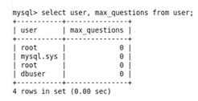

There are two MySQL attributes, max_allowed_packet,
and max_questions, that you set to use the Defect Database from
Calibre DefectReview.
The max_allowed_packet attribute controls the maximum size of
its communication buffer. As we are storing the files as blobs,
max_allowed_packet size should be large enough to store the files
The max_questions attribute of the MySQL table illustrates how
many queries a user can execute within one hour. A value of 0 for
max_questions means that infinite queries can be executed. The value
for this attribute should be 0 (zero).
Procedure
- To set
max_allowed_packet, use one of the following methods:
Add
the following to the my.cnf file, then restart
the MySQL server:
max_allowed_packet=1073741824
With a Linux-based operating system, this file is in /etc/my.cnf.
In the following
method to update the max_allowed_packet size, the value of max_allowed_packet
is reset to default if the MySQL server is restarted:
Log in
to the MySQL Database server.
mysql -h <host> -u <root_user> -p <root_password>
Run the following
command from the MySQL prompt:
SET GLOBAL max_allowed_packet=1073741824;
To check the
max_allowed_packet size, run the following from the MySQLprompt:
show variables like ‘max_allowed_packet’;
- To set
max_allowed_packet:
- Run
following command from a MySQL prompt:
SET GLOBAL max_allowed_packet=1073741824;
- To check
the max_allowed_packet size, run following commands:
show variables like 'max_allowed_packet';
- To set
max_questions:
- Run
the following commands to update the max_questions attribute value:
use mysql;
Update user set max_questions=0 where user='dbuser';
flush privileges;
- To check
the value of max_questions, run following commands:
use mysql;
select user, max_questions from user;
Figure 1. Checking
max_questions